Bestiario
/
En la mesa 0
Fichas de combateEl peligro aún no ha llegado
Busca una criatura y pulsa «Anclar».
Puedes añadir varias copias y ajustar sus PG.

TRAS LA PANTALLA
Busca una criatura y pulsa «Anclar».
Puedes añadir varias copias y ajustar sus PG.
PREGUNTA A LA OSCURIDAD
1–9: no. 10: giro inesperado. 11–20: sí. Un impar, salvo el 1, añade «pero». Un 1 o un 20 lleva la respuesta al extremo.
Con ventaja se toma el mayor de 2d20; con desventaja, el menor. Un giro genera un verbo y un sustantivo. Haz como máximo tres preguntas por situación.
DEJA QUE LOS DADOS DECIDAN
Cada tirada sustituye a la anterior. Los resultados no se guardan ni se añaden al bestiario o a la mesa.
Encuentros, nombres, armas y mucho más.
Elige una tabla para descubrir el resultado.